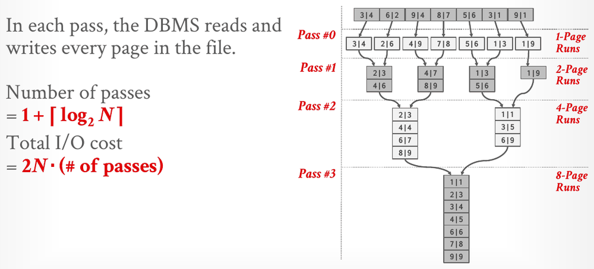

Database Internals in Go · Unit 6 · Lesson 8
P3.7 External Merge Sort and Limit
Build ORDER BY as a two-way external merge sort: a tuple comparator with ASC/DESC and NULL placement, a page format of your own design for sorted runs, run generation and merge passes that go through the buffer pool and delete every page they create; then the Limit executor that sits on top of it.
Unit 5, Lesson 1 counted the passes and I/Os of external merge sort on paper. This lesson builds it on the buffer pool you wrote in Project 1. The sort never writes a page to disk itself: it creates pages, fills them through guards, and lets the buffer pool evict them when memory runs out, which is exactly what a 16-frame test pool forces. You also design a page layout, as in Project 2, but this time no test pins it down. Limit is the small executor at the end; CMU's tests only run it on top of the sort.
Unit 5, Lesson 1: a file of N = 16 pages is sorted with the 2-way external merge sort. How many passes, and how many I/Os?
Unit 2, Lesson 8: your code still holds a ReadPageGuard on page 12 and calls bpm.DeletePage(12). What happens?
Unit 4, Lesson 1: how does the Go port represent a B+tree page, given that it can't cast a page's bytes to a struct as BusTub does?
Sort and Limit in a plan
The writeup: except when the ORDER BY attributes match the keys of an index, BusTub uses a SortPlanNode for every ORDER BY. (The match case is the pre-built OrderByAsIndexScan rule, which reads the index in order with your Lesson 4 index scan instead.) A query with ORDER BY and LIMIT plans the two as separate nodes:
bustub> explain (o) select * from __mock_table_4 order by colG desc nulls first, colH nulls last limit 3;
=== OPTIMIZER ===
Limit { limit=3 }
ExternalMergeSort { order_bys=[("Descending", "NullsFirst", "#0.0"), ("Default", "NullsLast", "#0.1")] }
MockScan { table=__mock_table_4 }The sort node prints as ExternalMergeSort; its output schema is its child's. Each ORDER BY item is a plans.OrderBy with a Type (common.OrderByDefault, OrderByAsc or OrderByDesc), a NullOrder (OrderByNullsDefault, OrderByNullsFirst or OrderByNullsLast) and an Expr, which can be any expression: p3.16-sort-limit.slt sorts on col1 + col4 - col1 desc. The planner keeps "Default" when the SQL says nothing, so your comparator has to turn defaults into a direction and a NULL placement.
The Limit stays a separate node over the sort as long as the stretch rule SortLimitAsTopN is a stub; once you write it in P3 Stretch: TopN, the ORDER BY … LIMIT queries of p3.16 and p3.18 run through TopN instead of your sort.
Sort keys and the tuple comparator
The sort compares SortEntry values: a SortKey (a []types.Value, one per ORDER BY item) and the tuple it came from. Evaluating the keys once per tuple, with GenerateSortKey(t, orderBys, schema), keeps the expressions out of every comparison. For the tuple (7, NULL, −2) and ORDER BY c DESC, a + 1, b, the key is [-2, 8, integer_null]. Pairing the key with the whole tuple is early materialization in Lecture #11's terms: the sorted output already holds every column.
TupleComparator.Less(a, b) reports whether a sorts before b, and the first ORDER BY item whose values differ decides. The writeup fixes the defaults: no direction means ascending; no NULL placement means NULLS FIRST for ascending order and NULLS LAST for descending order. An explicit NULLS FIRST or NULLS LAST overrides that. TestSortComparatorNullPlacement checks every combination:
| ORDER BY item | Where NULLs go |
|---|---|
a, a ASC | first |
a DESC | last |
a ASC NULLS LAST, a DESC NULLS LAST | last |
a NULLS FIRST, a DESC NULLS FIRST | first |
Put another way, a NULL behaves like a value smaller than every other in BusTub's defaults, and the explicit options move it. DuckDB, which you used in Unit 0, puts NULLs last by default in both directions, so don't check BusTub's NULL order against it without writing NULLS FIRST or LAST. Two NULLs are equal for the comparator: neither sorts before the other, and the next ORDER BY item decides. Non-NULL values compare with CompareLessThan and CompareEquals, which return a types.CmpBool; VARCHAR values compare bytewise, so "ab" sorts before "b". When every item is equal, Less returns false both ways.
Less has the shape Go's sort functions want: sort.SliceStable(entries, func(i, j int) bool { return cmp.Less(entries[i], entries[j]) }). It must be a strict ordering, so Less(x, x) is false; returning true for equal entries makes the sort's results depend on the algorithm's internals. The writeup lets you assume that every sort key appears only once, so ties never decide a test, but a stable sort costs little and keeps equal entries in input order. The doc comment on the executor allows this in-memory sort for the tuples of one page and forbids it for the whole input.
Designing the IntermediateResultPage
The sort stores its runs in pages from the buffer pool, and the writeup leaves the page format to you: "You should design the page layout and implement the read/write methods for the page." Its requirements, repeated in the doc comment on IntermediateResultPage:
- It must hold tuples with VARCHAR columns, so tuples have different lengths.
- The layout should be compact, "as little fragmentation as possible".
- A tuple never needs more than one page. When the next tuple doesn't fit, start a new page.
Make it a page view like Project 2's pages: a struct holding the page's []byte, with methods that read and write numbers through encoding/binary. Tuple.SerializeTo(dst) writes a 4-byte length followed by the tuple's bytes, and DeserializeTuple(src) reads that back into a new tuple (it copies, so the result outlives the page guard). The sort reads each run front to back and never jumps to the i-th tuple, so it doesn't need the slot array of Unit 1's slotted pages; tuples can follow each other directly:
offset 0 4 8
+-----+-------+------------------+------------------+----- ------+
|count| used | len | tuple 0 | len | tuple 1 | ... free |
+-----+-------+------------------+------------------+----- ------+
uint32 uint32 uint32 + bytes uint32 + bytes 8192Here count is the number of tuples and used the offset of the first free byte, so appending checks used + 4 + len <= 8192, writes the tuple at used and bumps both fields. A reader keeps a byte offset, starting at 8, and moves it by 4 + the length of each tuple it reads. This is one layout; nothing outside your files uses the type, the tests never look at the bytes, and its methods can be unexported. The writeup suggests designing it with the hash join's partitions in mind as well, which matters only if you do Lesson 7's optional exercise.
Run generation and merging through the buffer pool
The writeup's assumption is that the input does not fit in memory, so the sort must follow the lecture: store intermediate results in temporary pages and merge recursively. And it tests only the two-way sort, MergeSortWays = 2, the 3-buffer algorithm of Unit 5, Lesson 1. Init does all of the sorting, because a sort is a pipeline breaker; Next reads the result.

Pass 0: one-page runs
Read the child in batches. Collect SortEntry values, counting the bytes their tuples will take on a page, until the next tuple would not fit; then sort the collected entries in memory, write them in order to a new page, and start collecting again. Each such page is a run of one page: a MergeSortRun, which is pre-built and only holds the run's page IDs and the buffer pool (NewMergeSortRun(pages, bpm)). Pages come from bpm.NewPage(); you fill one through bpm.WritePage(id, bufferpool.AccessUnknown) and its DataMut(), and you drop the guard when the page is full. After that, the buffer pool may evict the page at any time and write it to disk; that is the external part of the sort, and you write no I/O code for it. The writeup's hint says exactly this: the page guard pins and unpins, and the buffer pool manager handles writing to disk.
Merge passes
Each pass takes the runs two at a time and merges each pair into a new run. A merge walks both runs with a MergeSortRunIterator, which you write: Begin, IsEnd, Tuple, Next and Close. The iterator holds a read guard on one page of its run at a time, moves to the run's next page when the current one is used up, and drops its guard in Close. At every step the merge compares the two current tuples' sort keys, appends the smaller tuple to the output run (a new page whenever the current output page is full), and advances that iterator. With an odd number of runs, the last one goes into the next pass unchanged. The pass ends when every pair is merged; the sort ends when one run is left.
During a merge the sort pins three pages at most: one page of each input run and the output page. Those are the three buffers of the lecture's 2-way algorithm, which is why the sort works through the 16-frame pool of TestSortLargeVarcharSmallPool: that test sorts 50,000 rows, about 200 pages, so the buffer pool has to evict sort pages, and the test checks that some of the sort's pages were written to disk.
Delete every page the sort created
The writeup warns about "zombie" pages: a page from a finished round that is never referred to again but still exists in the buffer pool. So once a pair of runs has been merged, delete both runs' pages with bpm.DeletePage; it returns false for a pinned page, so close both iterators first. The final run's pages go when Next has returned its last tuple, and again on a new Init if the previous output was not read to the end. TestSortLargeVarcharSmallPool allocates a marker page before and after the sort and checks that every page in between was deleted, then that no page is pinned:
--- FAIL: TestSortLargeVarcharSmallPool (1.91s)
external_merge_sort_executor_test.go:210: page 1314, allocated by the sort, was not deleted by the end (delete each run's pages once they are merged, and the last run's when Next returns false)That failure came from a sort that deleted every merged run but forgot the final one. A Limit above the sort stops pulling before the end, so the final run's pages can stay until the sort's next Init; the tests check deletion only after a full read.
The pass count, measured
In that test, pass 0 of a sort that fills each page produces 171 one-page runs. Unit 5's formula gives 1 + ⌈log2 171⌉ = 1 + 8 = 9 passes, and the sort really does run pass 0 plus eight merge passes. The general K-way sort would need far fewer with 16 frames, but the writeup tests only the two-way version, so the pass count depends only on the number of pages, not on the pool's size.
#11 Sorting & Aggregation Algorithms, "External merge sort" (24:17), slides 11–17: the two phases, the 2-way sort pass by pass and the general formula.
Limit
The LimitExecutor returns at most plan.Limit tuples of its child. If the child has fewer, it returns them all, and offsets are not supported. It keeps one counter, reset in Init. In Next, with left = Limit − (tuples returned so far), return false at once when left is 0 or less, without calling the child; otherwise ask the child for at most min(batchSize, left) tuples (or take a full batch and truncate the slices), add what you return to the counter, and pass the child's false through. LIMIT 0 returns nothing. The writeup calls Limit much easier than the sort and suggests writing it first if you are stuck, but warns that it is not tested without the sort; here too, p3.16's first record is order by colB desc limit 10.
Check your understanding
The rows (a, b) are (3, 1), (NULL, 2), (1, 3), (5, 4), (−2, 5), (4, NULL) and (NULL, 7). Which row comes first under ORDER BY b DESC NULLS FIRST, and which under ORDER BY b DESC?
Your pass 0 produces 171 one-page runs, and the buffer pool has 16 frames. How many passes does your 2-way sort make in all, counting pass 0?
During one 2-way merge, how many pages does a correct sort hold guards on at the same time, at most?
With the layout above (an 8-byte header, then each tuple as a 4-byte length and its bytes), how many 26-byte tuples fit on one 8,192-byte page?
A LIMIT 47 over a child of 200 rows is drained with a batch size of 10. What do the calls to its Next return?
Build it: the sort and the limit (stage 10)
You edit four files: execution/execution_common.go (TupleComparator.Less and GenerateSortKey), execution/intermediate_result_page.go (the page type and its methods), execution/external_merge_sort_executor.go (the run iterator and the executor's Init and Next) and execution/limit_executor.go. Run commands from go_db_internals/intro_to_db. The rules, in plain words:
Nextfollows the batch contract: clear*tuplesand*ridsfirst, append up tobatchSizetuples with one RID each (the zerocommon.RID{}for the sort's output), return true for every non-empty batch including the last partial one, and false once exhausted, on every later call too. Return errors, including the buffer pool's refusals, instead of panicking.- Default direction ASC; default NULLs first for ASC and last for DESC; explicit NULLS FIRST/LAST wins.
- Sort in memory only the tuples of one page. Store runs in buffer pool pages, merge two at a time, and delete each page once it is no longer needed, the final run's included.
- Drop every guard you take. After the sort, no page it touched may still be pinned.
- Limit returns at most
Limittuples, resets its count inInit, and stops calling its child once it has them.
-
What to think about
Which method of an expression evaluates it on one tuple, and which schema does it need? Should the key hold the expressions or their values?
The approach
Make a
SortKeywith capacitylen(orderBys)and appendob.Expr.Evaluate(&t, schema)for each item. NULL results stay in the key; the comparator handles them.One key fragment
for _, ob := range orderBys { key = append(key, ob.Expr.Evaluate(&t, schema)) } -
What to think about
For one item, what are the four cases of "is a's value NULL, is b's value NULL"? Which of them decide, and which move on to the next item? How does DESC change the answer for two non-NULL values but not for the NULL cases?
The approach
For each item i:
descisob.Type == common.OrderByDesc;nullsFirstis true forOrderByNullsFirst, false forOrderByNullsLast, and!descfor the default. Both NULL: continue. Onlya's NULL: returnnullsFirst. Onlyb's: return!nullsFirst. Equal values (CompareEqualsisCmpTrue): continue. Otherwise computelesswithCompareLessThanand return it, inverted for DESC. After the loop, return false.One key fragment
case an: return nullsFirst case bn: return !nullsFirstCheckpoint: keys and comparatorRun
go test -race -run '^TestSort(Comparator|GenerateSortKey)' ./execution/. It runsTestSortComparatorAscDesc,ComparatorNullPlacement(the seven combinations in the table),ComparatorSeveralKeys(ORDER BY a DESC, b ASC NULLS LAST) andGenerateSortKey. Success printsok intro_to_db/execution. A wrong default shows both directions of the comparison, for exampleDefault Default: NULL and 5: Less(a, b) = false, Less(b, a) = true, want true and false. -
What to think about
What must the header record so that a writer knows where the free space starts and a reader knows when to stop? How many bytes does a tuple take once serialized? What does a fresh page from
NewPagecontain, and why must the writer initialize the header explicitly?The approach
Give the struct one field,
data []byte, and a constructor over a guard's bytes. With the layout above:initwrites count 0 and used 8;insertTuple(t)computes 4 +t.Len(), returns false if that would passlen(data), otherwise callst.SerializeTo(data[used:])and updates both header fields; a reader method takes an offset and returns the tuple there (table.DeserializeTuple) and the offset after it. Also add a check that a tuple fits on an empty page at all, so the sort can report an error instead of looping.One key fragment
t.SerializeTo(p.data[used:]) // 4-byte length, then the tuple's bytes binary.LittleEndian.PutUint32(p.data[4:], uint32(used+4+t.Len())) -
What to think about
What does the iterator need to remember: which page of the run, which tuple on it, where the next tuple starts? When it moves to the next page, what happens to the guard on the old one? What should
Beginreturn for a run with no tuples?The approach
Fields: the page index in
run.pages(equal tolen(pages)at the end), the current*bufferpool.ReadPageGuardand page view, the tuple's index on the page, the current tuple and the offset of the next one. A helper "load page i" drops the old guard, takesrun.bpm.ReadPage(pages[i], bufferpool.AccessUnknown), skips empty pages, and reads the first tuple.Beginloads page 0;IsEndcompares the page index with the page count;Nextreads the next tuple or loads the next page;Closedrops the guard if there is one, and is safe to call twice.One key fragment
func (it *MergeSortRunIterator) Close() { if it.guard != nil { it.guard.Drop() it.guard = nil -
What to think about
How do you know, before writing anything, that the collected tuples fill exactly one page? Which page operations does a run writer need, and when does it drop its guard? What should
Initdo first if a previous run of the executor left a final run behind?The approach
Release anything the last run left (close the output iterator, delete the final run's pages), then
e.child.Init(). Keep a byte count starting at the header size. For each child tuple: if it can't fit on an empty page, return an error; if adding it would pass the page size, flush. Otherwise appendSortEntry{Key: GenerateSortKey(t, e.plan.OrderBys, schema), Tuple: t}and add its size. To flush, sort the entries withsort.SliceStableande.cmp.Less, write them with a small run writer (one that takes a new page fromNewPage, write-guards and initializes it, appends until full, and records the page IDs), and add the resultingMergeSortRunto a list. Flush once more at the end.One key fragment
sort.SliceStable(entries, func(i, j int) bool { return e.cmp.Less(entries[i], entries[j]) }) -
What to think about
The iterators hold tuples, but the comparator wants sort keys: where do the keys come from during a merge? In what order must you close iterators and delete pages? What is left at the end for zero runs, for one run?
The approach
While more than one run is left, build the next pass's list: for i in steps of
MergeSortWays, a lone last run is appended unchanged; otherwise open an iterator on each run (deferring or arranging theirClose), compute each current tuple's key withGenerateSortKey, and repeatedly append the tuple whose key isLessto a run writer and advance that iterator, recomputing its key. Close both iterators, close the writer, delete both input runs' pages withDeletePage(an error if it returns false), and append the merged run. When one run is left, keep it as the final run and open the output iterator on it.One key fragment
if best < 0 || e.cmp.Less(SortEntry{Key: keys[i]}, SortEntry{Key: keys[best]}) { best = i } -
What to think about
What does
Nextreturn for an empty input, where there is no final run? When exactly is the final run no longer needed: when the last tuple has been handed out, or on the call after? What must a secondInitin the middle of the output undo?The approach
Clear the slices. If there is no output iterator, return false. Append
Tuple()and a zero RID, thenNext(), while the batch has room and the iterator is not at the end. If it is at the end now, call the same release helperInituses: close the iterator, set it tonil, delete the final run's pages and forget them. Return whether the batch is non-empty.One key fragment
for len(*tuples) < batchSize && !e.out.IsEnd() { *tuples = append(*tuples, e.out.Tuple()) *rids = append(*rids, common.RID{}) e.out.Next() }Checkpoint: the external merge sortRun
go test -race -run '^TestSort(Empty|OnePage|LargeVarcharSmallPool|ReInit)$' ./execution/. It runsTestSortEmpty,OnePage(seven rows with NULLs under two ORDER BYs),LargeVarcharSmallPool(50,000 rows with a VARCHAR key through 16 frames: order, pages written to disk, every page deleted, no pins) andReInit(three full runs, then anInitin the middle of the output). Success printsok intro_to_db/executionin a few seconds. A sort that keeps its runs in memory fails with "the sort allocated no page", and one that leaks pages with the "was not deleted by the end" message above. -
What to think about
How many tuples may the next batch hold, given
batchSizeand what has already been returned? What shouldLIMIT 0do on the first call? Can you let the child fill your output slices directly?The approach
Add an
emittedfield.Initzeroes it and returnse.child.Init().Nextclears the slices, computesleft := e.plan.Limit - e.emitted, returns false ifleft <= 0, and otherwise callse.child.Next(tuples, rids, min(batchSize, left)), passing its false or error through. Truncate toleftas a guard, add the batch's length toemitted, and return whether it is non-empty.One key fragment
left := e.plan.Limit - e.emitted if left <= 0 { return false, nil }Checkpoint: LimitRun
go test -race -run '^TestSortLimit' ./execution/. It runs the six Limit tests (their names share the stage prefix):FewerRows,MoreRows,Zero,AcrossBatches(47 of 200 rows with batch size 10, and 40 of 200),ReInitandOverSort(ORDER BY a DESC LIMIT 3over your sort). Success printsok intro_to_db/execution.
From go_db_internals/intro_to_db, run:
go test -race -run '^TestSort' -timeout 300s ./...It runs the fourteen executor tests in execution (eight sort tests and six Limit tests) and TestSortSQL in sqllogictest, whose subtests run p3.16-sort-limit.slt (limits, sorts with explicit NULL placement and expression keys, a 100,000-row mock table, and two records marked +ensure:hash_join, which need stage 9), p3.18-integration-1.slt and p3.19-integration-2.slt (shortest paths and multi-step queries over a graph, using every executor so far). Success prints, with every other package at ok and [no tests to run] (or [no test files]):
ok intro_to_db/execution 2.970s
ok intro_to_db/sqllogictest 2.670sOn the starter the executor tests fail at their stubs (Default: 1 and 2: panic: TODO(P3): TupleComparator.Less not implemented, sorting no rows: panic: TODO(P3): ExternalMergeSortExecutor.Init not implemented, limit: panic: TODO(P3): LimitExecutor.Init not implemented), and each .slt file at its first sort or limit, such as p3.16-sort-limit.slt:6: unexpected error: internal error (panic): TODO(P3): LimitExecutor.Init not implemented. A wrong order shows the file and line, the expected and actual rows and the plan. One file, with every record logged:
go test -race -run '^TestSortSQL$/p3.16' ./sqllogictest/
go test -race -run '^TestSortSQL$/p3.16' -v ./sqllogictest/ -args -slt.verbosePrimary sources: the CMU 15-445/645 Fall 2025 Project #3 writeup (Task #4, External Merge Sort and Limit, and their hints); BusTub src/include/execution/execution_common.h, src/execution/execution_common.cpp, src/include/storage/page/intermediate_result_page.h, src/include/execution/executors/external_merge_sort_executor.h, src/execution/external_merge_sort_executor.cpp, src/include/execution/executors/limit_executor.h and src/execution/limit_executor.cpp at commit d49b823, and its test/sql/p3.16-sort-limit.slt, p3.18-integration-1.slt and p3.19-integration-2.slt; Lecture #11 slides 8 and 11–17; this course's execution/execution_common.go, execution/intermediate_result_page.go, execution/external_merge_sort_executor.go, execution/limit_executor.go and their tests.